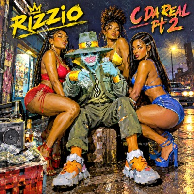

Life is like Tekken reckin all da homies gettin
Street fighter kickin hittin heads every second
Penultimate i'm not you forgot number one is my spot
I'm hot also burnin yearnin for what I got
All da ladies in da house All want to be my spouse
Givin them a bringin like mad cow's disease singin
Crazy-est i'm da lazy-iest
Hazy-est kickin immediate shit
Da fitness Yes i'm a witness
My mistress I guess I'll say God bless
Her chest is like walkin stalkin through valley
Of death Arizona and gettin very pally
I'm makin more moves than niggas with PlayStation
All aboard on tour with da ladies in da nation
I'll make U C da real and this is part two
Ever present I represent at six foot two
Now what the fuck's the chance of niggas
gettin wild on this track
I don't lack rap
I'm not a cowboy so I'll never buy Texas
I'm addin up my credits
and avoidin all the debits
Never gonna regret
The event where you and I first met
I bought a dozen and now I'm buzzin
With your girlfriend's sister's favourite cousin
I make stacks unlike
Fuckin fake dealers big pot bellied squealers
Makin a big meal-a-da mellow square deal
Sealed within the clear polythene all moldy and green
Sellin shitty weed that's full of bird seed
rodent feed, sticks and twigs
Nigs put up a front for blunts
I now man has to hunt
so what's the fuck's the chance Jack
Of niggas gettin wild on this track
Range, strange, catalyst, metamorphosis
evolving, dualism, osmosis,
Per twee oui per twee non
pour un oui ou pour un non
My niggas speakin French like Eric Cantona
I got that certain something je ne sais quoi
Givin you a bringin
Mad mc's rhymin singin
98 99 100 ready or not
No you're not ready G
You're comin like Parker on Thunderbirds me lady
Crazy-est i'm da lazy-iest
Hazy-est kickin innuendo shit
Be a man not a kid you fuckin flid
Er no hat was like some er other kids
i'll make U C da real and this is part two
Ever present I represent at six feet two
I'll make U C da real it's true
You know I don't lack
As ol JR would say "Is that a fact
It's not fiction yo' m.c's just listen
I'm comin with malice
I make more shady deals
Than that nigga from Dallas
Texas and my main man Flexus
Represents in da P.X-us
So all yall gonna respect this
So all yall know I'm gonna reck this
Life is like Tekken homies gettin reckin
Street fighter kickin heads every second
I always win because unhappy nigga leavin...
Battered and bruised Yoshimitsu's cheatin
Penultimate i'm not Number one is my spot
And you know i've got because i'm burnin hot
The ladies in da house all want to be my spouse
But just like a mouse i'm takin all the cheese
'Cause Bitches are bitches and im hard to please
At ease I achieve wit serious grief
The mission that's goin in on TV Screen
I never lose unhappy nigga going
Gettin battered and bruised
Black and blue Michelle Chang Hoeing

 Man, you don't know me
Man, you don't know me Here to a special, no thank them
Here to a special, no thank them